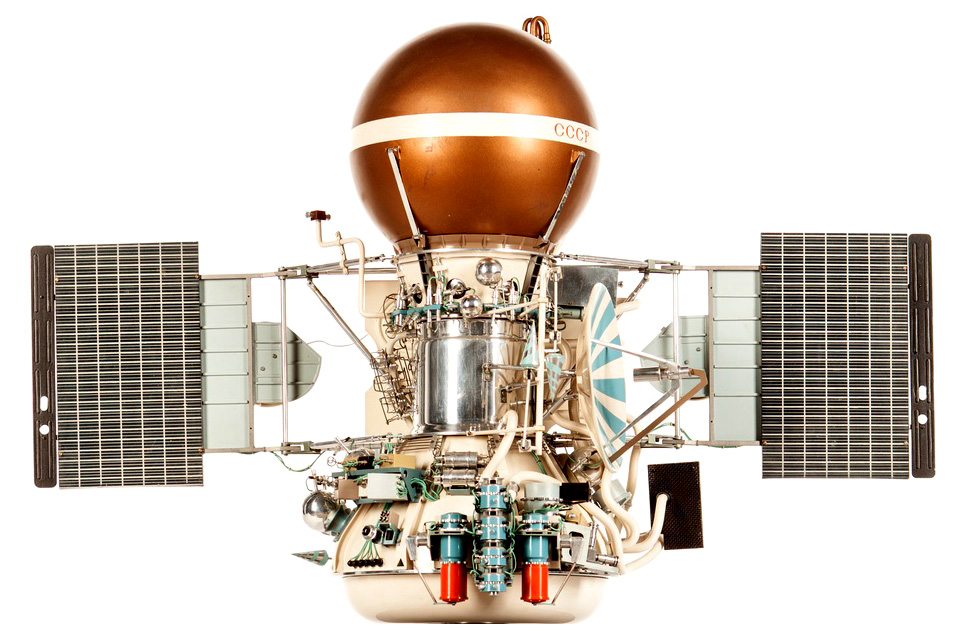

Венера-9
«Венера-9» — автоматическая межпланетная станция (АМС) СССР, предназначенная для изучения Венеры в рамках программы «Венера».
Однотипна с АМС «Венера-10» и запускалась с ней параллельно. Поэтому их полёты и приземления порой рассматриваются как единая миссия.
«Венера-9» запущена 8 июня 1975 года с помощью ракеты-носителя «Протон-К» с разгонным блоком ДМ.
Посадка на поверхность Венеры 22 октября 1975 года, связь со спускаемым аппаратом поддерживалась 53 минуты. Были получены первые в мире панорамные изображения, переданные с поверхности другой планеты. Впервые были проведены измерения скорости ветра на поверхности планеты. Первый в мире искусственный спутник Венеры.


Первое в истории фото поверхности Венеры